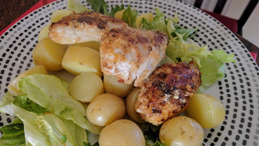

Cajun-spiced chicken
Ingredients
- 2 tbsp plain flour
- 2 tsp Cajun seasoning
- 0.5 tsp salt
- 4 boneless skinless chicken breasts, about 140 g each
- 2 tbsp olive oil
- tzatziki, mixed salad and new potatoes, to serve
Instructions
- Mix together the flour, Cajun seasoning and salt.
- Rub both sides of the chicken breasts with a tbsp of the oil. Dust each side with the seasoned flour. Heat the remaining oil in a fry pan.
- Fry the coated chicken for 6-7 minutes on each side until cooked golden. Serve with the tzatziki, mixed salad and new potatoes.
Source
BBC Good Food: Low-fat FeastsShort URL